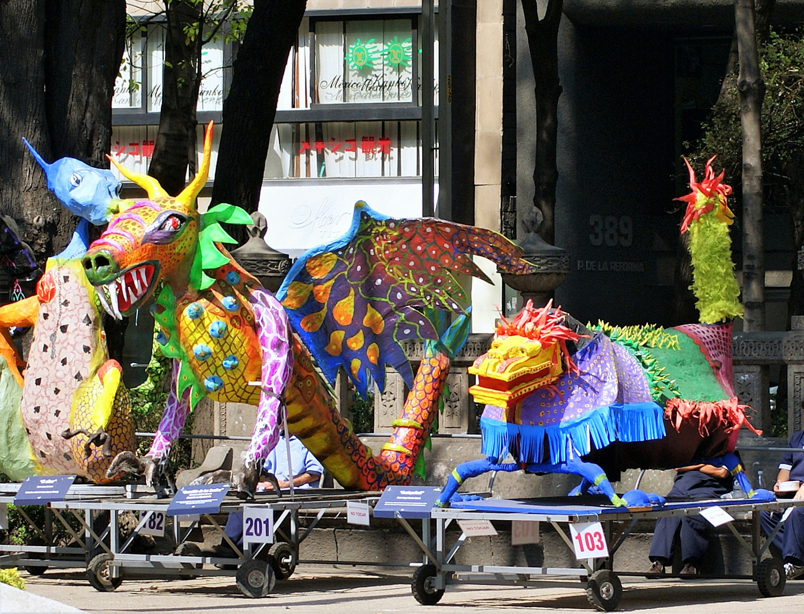

Hi! My name is Israel Garcia Real. I am originally from Mexico and have been living in Finland for many years. I am currently a second-year Business Information Technology student at Laurea University of Applied Sciences.
My previous academic background is in anthropology, and most of my professional experience has been in logistics. Moving into IT and digital services has therefore been a new direction for me. I am interested in learning how technology can be combined with creativity and practical problem-solving.
Outside my studies, I enjoy music, playing guitar, travelling, cycling, and learning about history and culture. For this exercise, I chose an alebrije as my favourite imaginary animal because it has a strong connection to Mexican art and culture, so it feels like a natural and personal choice.

Photo by Carl Campbell on Unsplash
Alebrijes are colourful imaginary creatures from Mexican folk art. They often combine features of different animals and are decorated with bright colours and detailed patterns.